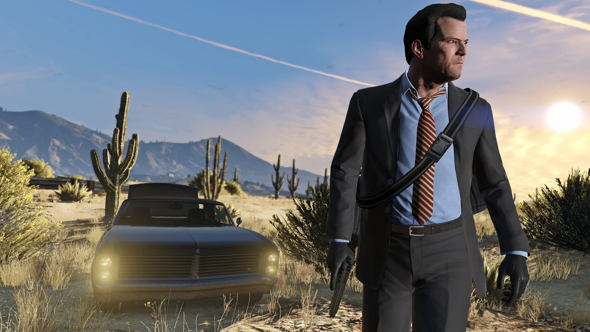
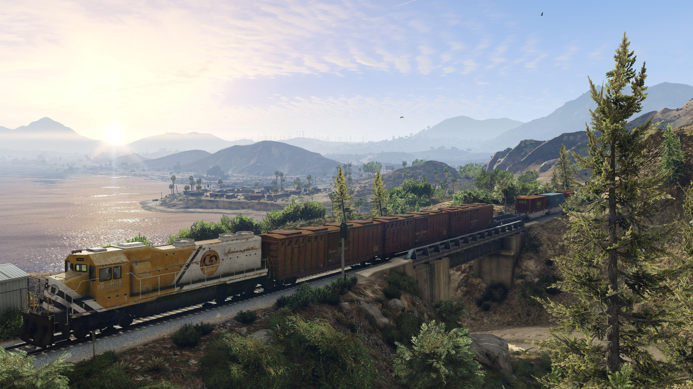
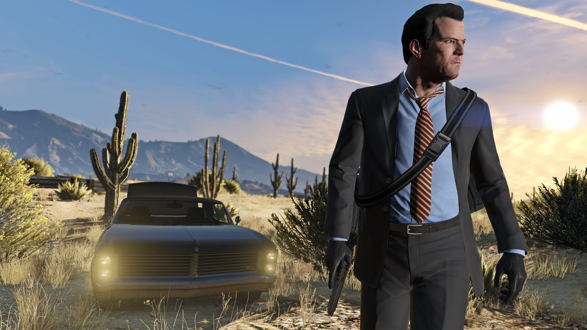
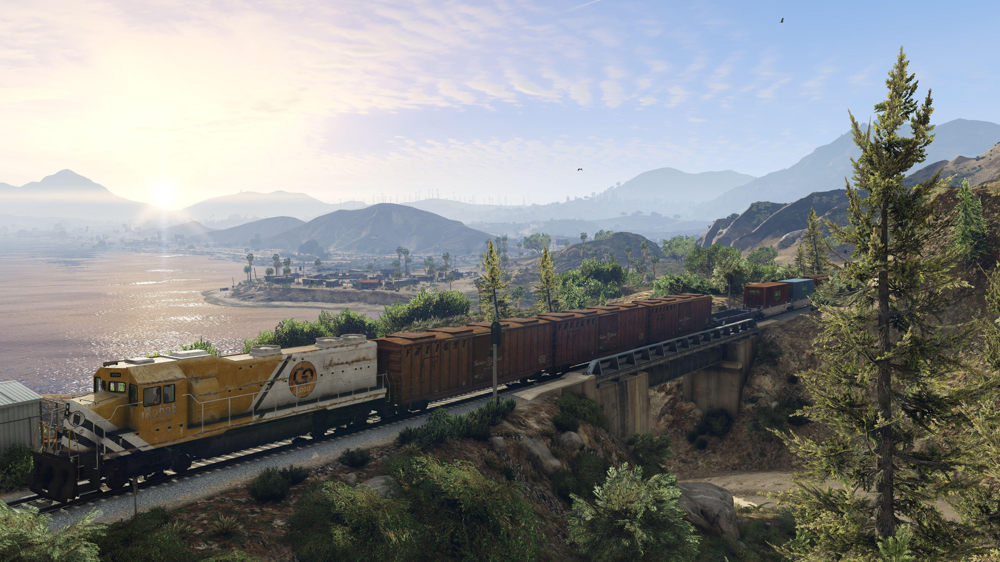

Rockstar Games
World That Calls
and Confounds
Grand Theft Auto V (GTA V) is known for its engaging storyline, diverse gameplay, and immersive open-world experience. While the main story missions are fixed, players can approach various activities and side missions throughout the game.
⁂ Get the Scoop ⁂
Realm Roam
Grand Theft Auto V" (GTA 5) is an action-adventure video game developed by Rockstar North and published by Rockstar Games. Released in 2013 for various platforms including PlayStation, Xbox, and PC, it quickly became one of the best-selling and most critically acclaimed video games of all time. Set within the fictional state of San Andreas, which is modeled on Southern California, GTA 5 offers players an open-world environment where they can freely roam and interact with the surroundings. The game follows the interconnected lives of three protagonists: Michael De Santa, a retired bank robber living under witness protection; Franklin Clinton, a young repo man working for a corrupt car dealership; and Trevor Philips, a violent and unpredictable career criminal. Players navigate through a series of missions and heists, both as individual characters and in collaboration with each other, as they delve into the criminal underworld of Los Santos, the fictional city within the game world. The storyline intertwines themes of crime, corruption, loyalty, and betrayal, offering players a rich and immersive narrative experience. In addition to the main storyline, GTA 5 offers an extensive multiplayer mode known as Grand Theft Auto Online, where players can engage in various activities such as races, deathmatches, and cooperative heists with friends or other players online. With its sprawling open-world environment, engaging storyline, diverse characters, and innovative gameplay mechanics, GTA 5 has left a lasting impact on the gaming industry and remains a beloved title among gamers worldwide.
⁂ Learn More ⁂
 



Grand Theft Auto V (GTA V) is an action-packed video game featuring a sprawling open world, intricate heists, and a compelling narrative. With three dynamic protagonists, diverse missions, and a meticulously crafted environment, GTA V offers a rich and immersive gaming experience.
Michael Santa

Michael Da Santa
Ned Luke
GTA V
Overview
Michael De Santa, once Michael Townley, is a key figure in Grand Theft Auto V. Born on August 22, 1965, in Los Santos, he's a retired criminal under witness protection.
Overview
Franklin


Franklin Clinton
likeable
Songs
Overview
Franklin Clinton, an ambitious gang member in GTA V, aims to break free from poverty in Los Santos. His life intersects with retired criminal Michael De Santa and unpredictable Trevor Phillips.
Overview
Franklin Clinton is a young and ambitious character introduced in Grand Theft Auto V. Born and raised in the streets of South Los Santos, Franklin is determined to escape the cycle of poverty and crime that surrounds him. He works as a repo man for a shady car dealership, repossessing cars from delinquent clients.
What sets Franklin apart is his desire for a better life and his reluctance to be entangled in the gang culture that dominates his neighborhood. He represents the pursuit of the American Dream in a city filled with crime and corruption. Franklin is more level-headed and strategic compared to his counterparts, Michael and Trevor, often serving as the voice of reason within the trio.

Lamar's
Laid-back
GTA 5, released in 2013, features three protagonists—Michael, Franklin, and Trevor—navigating a sprawling open-world set in San Andreas. Renowned for its engaging narrative and dynamic gameplay, it remains a significant milestone in the gaming industry.
⁂ Rockstar ↗ ⁂ Liberty in
Los Santos
GTA 5, released in 2013, features three protagonists—Michael, Franklin, and Trevor—navigating a sprawling open-world set in San Andreas. Renowned for its engaging narrative and dynamic gameplay, it remains a significant milestone in the gaming industry.
⁂ Trailer ↗ ⁂
Explore the immersive world of Grand Theft Auto V (GTA 5), a 2013 open-world masterpiece. Join protagonists Michael, Franklin, and Trevor on a thrilling journey through the fictional state of San Andreas. With its gripping narrative and dynamic gameplay, GTA 5 continues to captivate and define the essence of interactive entertainment.